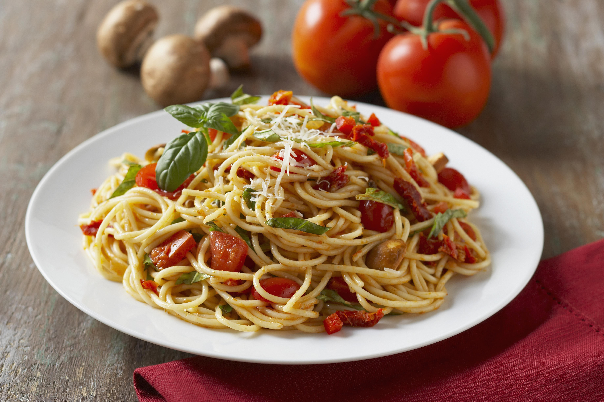

Tomato and Garlic Pasta

Description
A simple yet delectable dish, tomato and garlic pasta is a celebration of minimalism
and robust flavors. Al dente pasta is tossed in a vibrant sauce made with ripe
tomatoes and aromatic garlic, creating a harmonious blend of freshness and savory
richness. The tomatoes lend a juicy sweetness, complemented by the bold kick of
garlic, resulting in a quick and satisfying pasta dish that captures the essence of
Italian simplicity.
Incredients
- Tomatoes
- Hair Pasta
- Olive Oil
- Garlic
- Tomato Paste
- Salt
- Black Pepper
- Fresh Basil
- Parmesan Cheese
Steps
- Place tomatoes in a large pot and cover with water. Bring to a boil. Pour hot water of and cover with cold water
Peel the skin and dice the tomatoes
- Bring a large pot of lightly salted water to boil. Cook angel hair pasta in the boiling water until tender yet firm (4-5 min)
- Meanwhile, heat olive oil in a large skillet or pan, making sure there is enough to cover the bottom of the pan, and sauté garlic until opaque but not browned. Stir in tomato paste. Immediately stir in the tomatoes, salt, and pepper. Reduce heat, and simmer until pasta is ready, adding basil at the end.
- Drain pasta, do not rinse in cold water. Toss with a bit of olive oil, then mx into the sauce.
- Reduce heat as low as possible. Keep warm, uncovered, for about 10 minutes when it is ready to serve. Garnish generously with fresh Parmesan cheese.